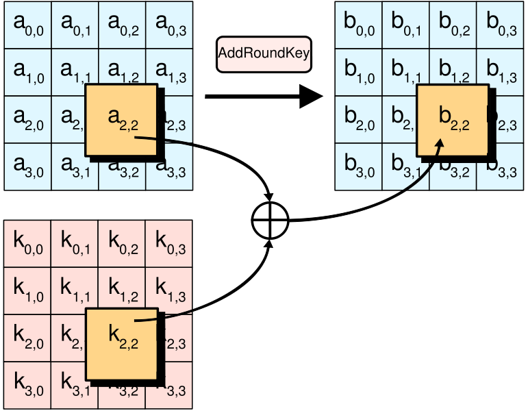

Comic from xkcd.com
Comic from xkcd.com
Documents produced as official duties of an employee of the US government are assumed to be in the public domain, unless classified. While creation of free software for profit-seeking corporations might still be up for debate, governments and other publicly funded institutions can embrace free software.
That works sponsored by a government should be placed in the public domain reminds us of their public nature. Copyleft is the 21st century equivalent of public domain. It is in the spirit of public domain, but provides better protection to the intellectual property.
The U. S. government is starting to understand this: NASA, the Department of Defense, and the NSA are making steady movement towards free software, which should also demonstrate to everyone that free software can meet even the most extreme requirements of security and reliability.
Why is free software secure? A common principle in software is that “security through obscurity” is a bad idea. For example, the most important security encryption algorithms today are designed and analyzed in public and have free software implementations:

Math applied during encryption of data. The security of encryption algorithms is guaranteed by the many smart eyeballs who have analyzed it. Ultimately, if the mathematicians prove an encryption algorithm is secure, there are no back doors, and a password is the only key to the data.
Would the GPL require that the U.S. government give away its top secret code? The GPL's goal is to ensure that all users of software have the right to inspect and make changes. The user of military software is the military itself, so the conditions are met.
The U.S. government might not want to give away certain source code to other countries, but this is also solvable. Since enforcement of copyright is the right granted to the U.S. Congress, they can create a law that says any GPL software stamped “Top Secret” is removed from copyleft obligations, something that should apply only to a small amount of code.
A question to ponder: If the military were to create a vision system to help it build more discriminate bombs less likely to hit civilians, would the military be inclined to give this away or would they be afraid that the enemy would use it to build more discriminate IEDs? Software has so many different applications and purposes, it will be quite difficult for the government to make the correct trade-offs.
Because GPL should be usable by all of the U.S. government's code, I would like to see them endorse it for all publicly-funded software development. This would also help to ensure that the U.S. is not left behind when free software achieves world domination.